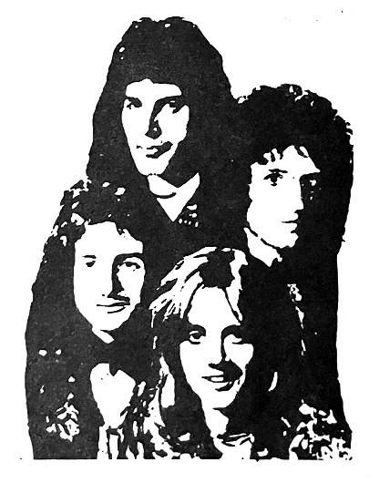

One item of interest is a notice of an upcoming "Queen and Beatles Festival" to be held in August 1975 in both Osaka and Hiroshima, with other cities to follow later in the year. Queen content to be screened at this festival reportedly consisted of "40-50 minutes of slides of Queen on a holiday in Kyoto, as well as other unreleased footage". Additionally, keepsake photos of Queen and the Beatles printed on woodblocks were available for purchase. Other Warner Pioneer and EMI artists were to be featured as well.
It's sad to see the first Japanese Queen Fan Club dissolve like this. The Japanese Division of the Official International Queen Fan Club would start up in October, with a decidedly more corporate, more commercial feel. Nothing quite matches the passion and drive of a group of high school students trying to lift up their favorite new band, no matter what it costs them. The early years of the QFCJ must have been a very exciting time for young Queen fans in Japan to be involved in the fandom.
Dissolution of the QFCJ
QFCJ FAQ